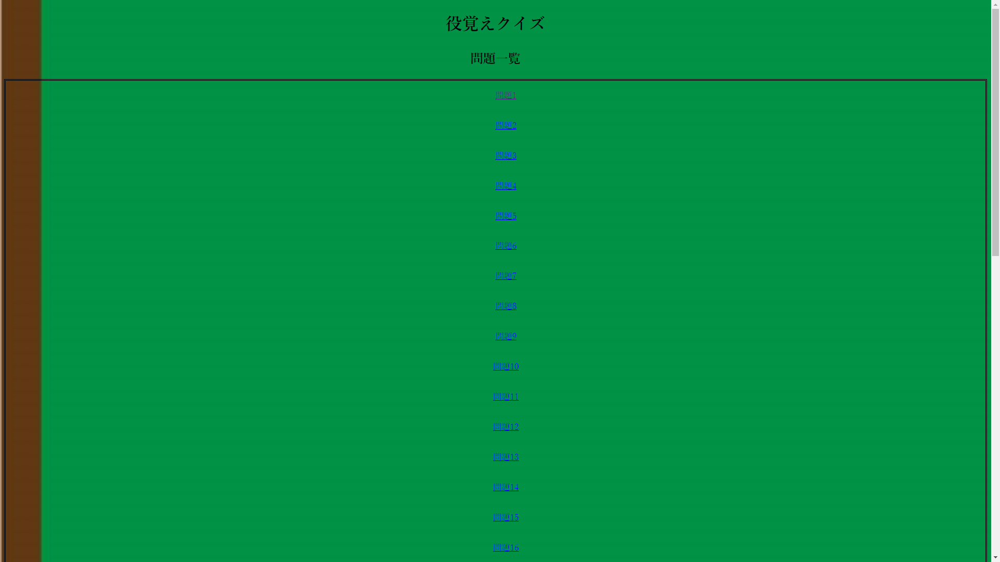

WELCOME to
MY PORTFOLIO!
01
PROFILE
プロフィール
GO
02
RECORD
制作物
GO
03
SKILL
使用できる言語
GO
04
GITHUB
マイページ
GO
PROFILE
野田 晃暉（26）
はじめまして。 野田 晃暉と申します。
前職は福祉用具関係の営業を行っておりました。
昨年末、友人の勧めで自作PCを作成し、
はじめはゲームさえできればよかったのですが
ある日、ネットサーフィンのしている際に
スマートフォンで見ていたときとは違う
WEBサイトの見え方・迫力に興味を惹かれ、
フロントエンドエンジニアという職業に興味を持ち、
独学で勉強中です。
RECORD
麻雀役リスト（令和5年2月28日～令和5年3月1日）
令和5年1月20日から独学で勉強を始めて、1番最初の制作物です。
HTMLとCSSの最序盤の基礎だけで出来ており、特に変わった挙動もしません。
HTMLとCSSのおさらいができました。
麻雀役覚えクイズ（令和5年3月1日～令和5年3月2日）

麻雀役リストを作成し、自分が役をしっかり覚えられているか気になったため、
作成したクイズサイトです。HTMLとCSSとJava Scriptを使用しております。
SKILL
HTML5:1month
CSS3:1month
JS:0.5month